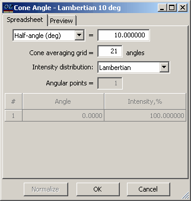
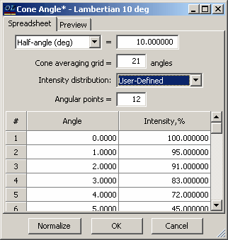
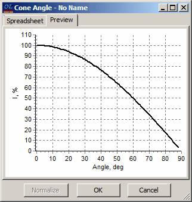

Cone Angle Database
The Cone Angle database allows users to create specifications for cone angles averaging. When the Cone Angle file is loaded into the OptiChar memory, all computations of photometric characteristics will take into account the averaging of cone angles.
Note: Calculations are meaningful only for the averaged polarization of light; however, they can also be performed for s- and p-polarizations, though this is more formal.

Cone specifications can be defined using Half-angle (in degrees), f/number, or Numerical Aperture. Computations are carried out on an angular grid; as the number of points increases, the accuracy improves, but so does the computational time. OptiChar employs high-precision integration procedures, making 10-20 points sufficient for most scenarios. The type of distribution available includes:
Uniform Intensity
Lambertian
User-Defined
Calculations for non-uniform distributions are conducted as follows:
Let θ represent the angle measured from the cone axis. For normal incidence, this angle aligns with the angle of incidence, as the cone axis is perpendicular to the coating surface.
If θ <= Half-angle: User Defined Intensity (Theta) is utilized. Piece-wise interpolation is employed to compute intermediate values as usual.
If θ > Half-angle: The intensity is considered zero.
User-defined intensity can be determined outside the half-angle grid. Values outside the cone do not influence the result; however, this definition allows for easy adjustments of the cone half-angle without needing to redefine the intensity distribution.
In this case, the Cone Angle Editor enables users to specify the number of Angular points for the Cone Angle Intensity distribution and also manage the associated spreadsheet. The number of angular points must not overlap with the Cone averaging grid parameter. OptiChar will automatically handle all necessary interpolation procedures.

If necessary, the distribution can be normalized by using the Normalize button, which adjusts it to a maximum level of 100%. The Preview tab provides an option to visualize the entered distribution.
